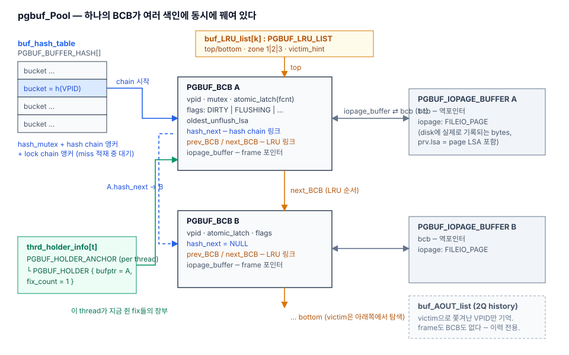

CUBRID PAGE BUFFER · REFERENCEstructure map · printable
Data-structure glossary
pgbuf structure map
모든 것은 static 전역 pgbuf_Pool (PGBUF_BUFFER_POOL) 하나에 매달린다. 색인은 별도 node가 아니라 BCB 안의 링크 field로 꿰인 intrusive list다.

| 구조 | 한 줄 정의 | 답하는 질문 | 보호 lock | Source (branch 1daa9d2) |
|---|---|---|---|---|
PGBUF_BCB (BCB_table) | frame당 관리 카드: vpid, atomic_latch(mode/fcnt/waiter), flags(DIRTY|FLUSHING|…), oldest_unflush_lsa, hash/LRU 링크 | 이 frame의 identity·사용자·상태는? | BCB mutex + atomic latch | page_buffer.c:513–545 |
PGBUF_IOPAGE_BUFFER (iopage_table) | BCB와 1:1. 실제 FILEIO_PAGE iopage — disk에 기록되는 bytes, prv.lsa(page LSA) 포함 | page의 실제 내용 | BCB latch 계약 | 548–557 |
PGBUF_BUFFER_HASH (buf_hash_table) | bucket 배열; bucket = hash_mutex + BCB chain 앵커 + lock chain 앵커 | VPID가 어느 BCB에 resident인가? | bucket hash_mutex | 577–584 |
PGBUF_BUFFER_LOCK (buf_lock_table) | "이 VPID를 지금 disk에서 적재 중" 자리표; 같은 page 요청자는 대기. 항목 수 = thread 수(고정) | 중복 disk read 방지 | 같은 bucket hash_mutex | 559–571 |
PGBUF_LRU_LIST (buf_LRU_list[]) | 여러 개(shared/private)로 분할된 LRU; zone 1|2|3, bottom_1/2 경계, victim_hint, tick 나이 계산 | 다음 victim은 누구인가? | list별 mutex | 587–625 |
PGBUF_AOUT_LIST (buf_AOUT_list) | 2Q의 이력 축: victim으로 쫓겨난 VPID만 FIFO 보관 (frame 없음) | 최근에 쫓아냈던 page인가? (재진입 승격) | Aout_mutex | 637–668 |
PGBUF_INVALID_LIST (buf_invalid_list) | deallocate된 page의 빈 BCB free list | 당장 재사용 가능한 BCB는? | invalid_mutex | 628–635 |
PGBUF_HOLDER_ANCHOR (thrd_holder_info[]) | thread당 1개, 64B cache-line 정렬; thrd_hold_list = 이 thread가 fix 중인 PGBUF_HOLDER(bufptr + fix_count) 목록 | 이 thread가 지금 무엇을 쥐고 있나? | per-thread 소유 | 463–492 |
victim_cand_list / flushed_bcbs | flush daemon의 victim 후보 스냅샷 / post-flush 처리 lock-free queue | flusher의 작업 목록 | daemon 소유 / lock-free | 778, 821, 836–845 |
pgbuf_Pool (PGBUF_BUFFER_POOL) | 위 전부를 담는 유일한 static 전역 | — | — | 757–847 |
자주 틀리는 것: dirty page 전용 list는 없다. DIRTY는 BCB
flags의 bit일 뿐이고, flusher는 LRU를 훑어 dirty victim 후보를 모은다. InnoDB flush_list와 혼동 금지.Cardinality & sizing
pgbuf_Pool은 server 프로세스당(=DB당) static 전역 1개. 기본값: data_buffer_size 512MB ÷ IO_PAGESIZE 16KB = num_buffers 32,768 (PRM_ID_PB_NBUFFERS).
| 구조 | 몇 개? | 크기 공식 | 기본 512MB pool |
|---|---|---|---|
iopage_table | frame당 1 | num_buffers × (16KB+8B) (5693) | ≈512MB (본체) |
BCB_table | frame당 1 (iopage와 1:1) | num_buffers × sizeof(PGBUF_BCB) ≈140B (5679) | ≈4–5MB |
buf_hash_table | pool당 1, bucket 수 고정 | 1<<20 buckets × 56B (297–298) | ≈56MB 고정 (pool 크기 무관) |
buf_lock_table | thread당 slot 1 | thread_num_total_threads() × ~32B (5822) | KB |
| shared LRU | pool당 N | 기본 자동: MAX_NTRANS 기준, list당 ≥1000 pages, 최소 4 (5858–5871) | ≈32 lists |
| private LRU | transaction당 1 + vacuum worker당 1 | 기본 MAX_NTRANS + VACUUM_MAX_WORKER_COUNT (14072–14076) | KB |
buf_AOUT_list | pool당 1 | num_buffers × pb_aout_ratio, 상한 32768 (5919–5942) | 기본 ratio 0.0 → 꺼짐 |
thrd_holder_info | thread당 anchor 1 (64B 고정) | + thread당 holder 7개 사전 할당, 10개 단위 증가·반납 없음 (6064–6098) | KB (debug는 holder당 fixed_at[64KB] 주의) |
victim_cand_list | pool당 1 | num_buffers × 24B (1895) | ≈0.8MB |
기억할 세 가지: thread당인 것은 lock slot과 holder뿐("지금 하는 일" 추적) · transaction당인 것은 private LRU뿐(quota 단위) · hash table은 줄지 않는 고정 비용(bucket 하드코딩
1<<20).Lines cite the lab tracer branch commit 1daa9d2; struct definitions are identical to pinned f799e05.